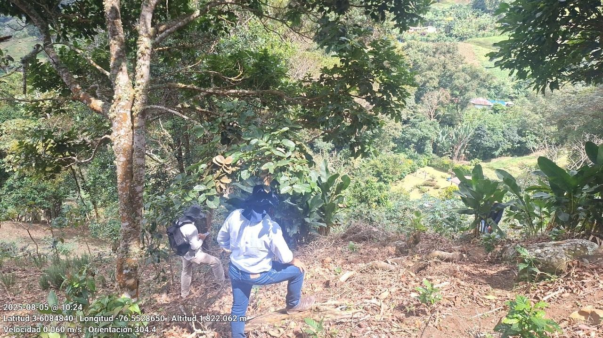
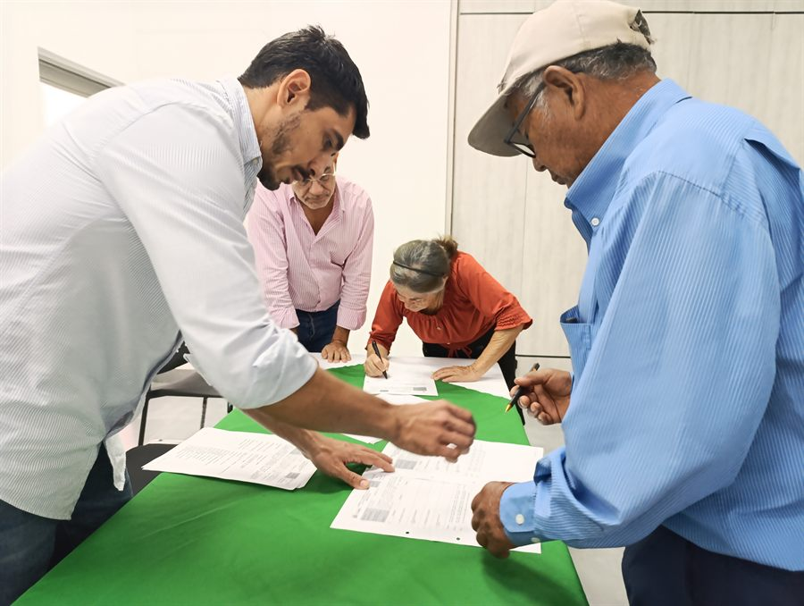
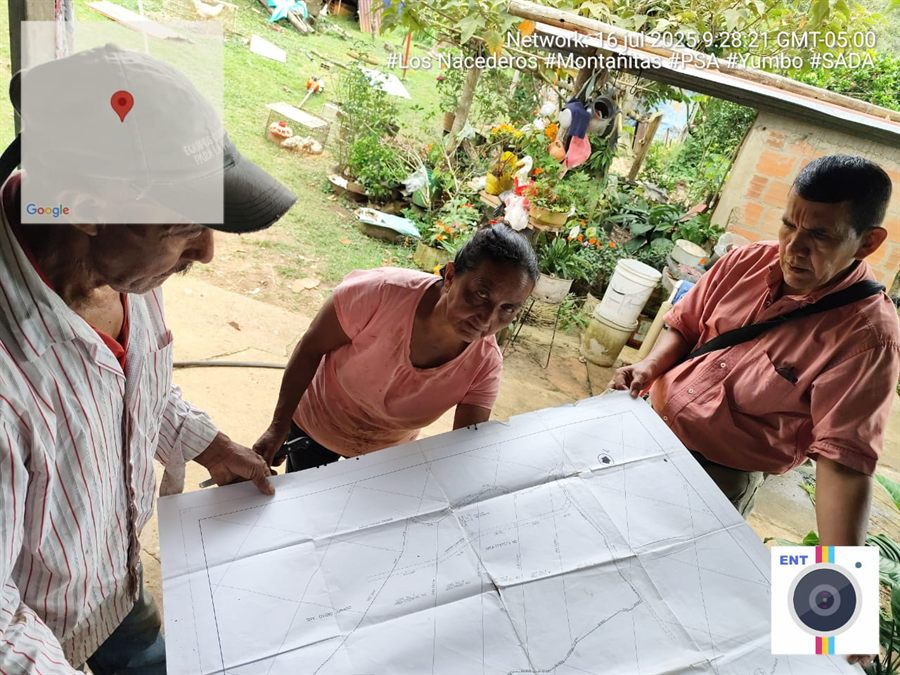
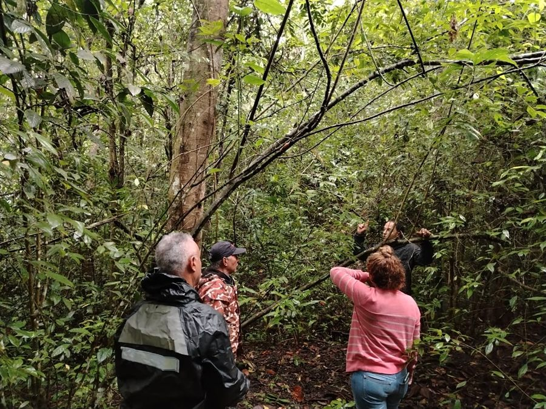

Sostenibilidad que se mide y se ejecuta
Cumplimiento ambiental en cifras y en campo.
Estructuramos, ejecutamos y reportamos tu obligación ambiental y tus compensaciones, en campo, con comunidades y en hectáreas reales.
8.900+
hectáreas conservadas
$6.000M+
en incentivos gestionados (COP)
800+
familias vinculadas
4
programas de PSA estructurados
Fuente: agregado de los programas de Cali (2017–2019), Jamundí (2020–2023), Farallones (2023–2024) y Yumbo (2024–2026). El detalle programa por programa está más abajo. Cifras sin redondeo al alza.
Qué es Baremo
El rigor, no el verde.
Las empresas con obligaciones ambientales tienen la obligación, el presupuesto y la exposición, pero no quién se las ejecute en campo. Reciben un diagnóstico y quedan igual: con el papel, sin las hectáreas. Baremo estructura el mecanismo, lo implementa en el territorio con las comunidades y lo deja medido y reportado ante la autoridad.
Vs · Gran consultora
En ejecución
Ella entrega el diagnóstico y se va. Baremo se queda a implementar.
Vs · Firma “verde”
En rigor
Ella vende relato. Baremo entrega medición, con cifra y fuente.
Vs · Contratista de campo
En estructura
Él siembra. Baremo diseña el mecanismo, lo opera y lo deja reportado.
Servicios
Qué hacemos.
Núcleo · Cumplimiento ambiental
-
01
Inversión forzosa del 1%
Plan de inversión del 1% (Art. 43, Ley 99/1993) diseñado y ejecutado en la cuenca, del portafolio de líneas elegibles a la obra en terreno y su reporte.
-
02
Compensaciones por biodiversidad
La compensación exigida por la licencia, estructurada e implementada en hectáreas, con línea base y seguimiento verificables.
-
03
Pago por Servicios Ambientales (PSA)
Nuestro mayor historial: cuatro programas estructurados y operados. Diseño del esquema, vinculación de familias y seguimiento sostenible.
-
04
Compensaciones e inversiones voluntarias
Cuando la empresa va más allá del mínimo legal: metas medibles, ejecución en campo y un reporte que aguanta la mirada de la junta.
Capacidades · Ejecución, medición y territorio
- 05
Instrumentos económicos e incentivos
Mecanismos financieros que sostienen la conservación cuando termina el contrato.
- 06
Medición y reporte (MRV)
Teledetección, modelación hidrológica, sensores y datos con IA. La evidencia que resiste auditoría.
- 07
Relacionamiento comunitario
Los acuerdos y la confianza que hacen que un esquema se firme, se cumpla y se mantenga.
- 08
Obras de restauración ecológica
Siembra, bioingeniería y control de erosión ejecutados en terreno.
- 09
Asesoría ESG
Criterios ambientales, sociales y de gobernanza anclados en el cumplimiento real.
- 10
Formación HSE
Capacitación en seguridad, salud y ambiente a la medida del riesgo real del cliente.
Resultados · Programa por programa
De dónde sale cada cifra.
Cuatro programas de Pago por Servicios Ambientales, diseñados y operados para autoridades públicas del Valle del Cauca. El agregado de arriba se abre aquí, sin esconder el detalle.
| Programa | Hectáreas | Incentivos (COP) | Familias |
|---|---|---|---|
| PSA Distrito de Cali2017–2019 · Dagma | 3.000+ | $2.700M | 482 |
| PSA Jamundí2020–2023 · Secretaría de Ambiente | 3.770 | $1.455M | 280 |
| Incentivos PNN Farallones2023–2024 · Parques Nacionales | 1.000 | $1.200M | — |
| PSA Yumbo2024–2026 · Secretaría de Ambiente | 1.200 | $778M | 123 |
| Agregado | 8.900+ | $6.133M | 885 |
Desliza la tabla en horizontal para ver todas las columnas.
Cali, Jamundí y Yumbo son programas ejecutados: hectáreas bajo acuerdo de conservación e incentivos gestionados y desembolsados. Farallones es un esquema estructurado: 1.000 hectáreas priorizadas y $1.200 millones dimensionados, con la ejecución a cargo de Parques Nacionales. Todos los programas fueron dirigidos por Alfonso Lenis como consultor de la entidad contratante. Cifras sin redondeo al alza.

Cómo trabajamos
Estructurar, ejecutar, medir.
01 · Estructurar
El mecanismo
Qué obligación, en qué cuenca, con qué línea base y criterio de éxito. Postura clara, no menú de opciones.
02 · Ejecutar
En campo
Acuerdos, obras y vinculación de familias con las comunidades y las cuencas. Aquí la mayoría desaparece; Baremo se queda.
03 · Medir
Y reportar
Indicadores con fuente y el reporte que sustenta el cumplimiento ante la autoridad y la junta.
Trabajo en campo · Prueba de ejecución



Quién responde
Alfonso Lenis, director.
Baremo es una firma de una persona, y es deliberado: quien te vende el mecanismo es quien te lo ejecuta. Los cuatro programas de esta página los diseñó y operó él, desde el Dagma, la Secretaría de Ambiente de Jamundí, Parques Nacionales y la Secretaría de Ambiente de Yumbo.
Administrador del medio ambiente y de los recursos naturales. Se sienta con gerencias de sostenibilidad y juntas directivas, y con familias campesinas y juntas de acción comunal en el predio. Para volumen y frentes simultáneos, Baremo arma equipo por proyecto.
Lo que sostiene el trabajo
- Una postura por decisión: qué obligación, en qué cuenca, con qué criterio de éxito.
- Toda cifra lleva su fuente visible. Si es un estimado, lo dice.
- Los acuerdos se firman con el dueño del predio, nunca con un intermediario.
- El reporte lo sustentamos ante la autoridad y ante tu junta.
Hablemos
Tienes la obligación, el presupuesto y la exposición. Baremo la ejecuta.
Baremo estructura, ejecuta y reporta el cumplimiento ambiental de las empresas en Colombia: la inversión del 1%, las compensaciones y los PSA. No entregamos el informe y desaparecemos; lo ejecutamos en campo, con comunidades y hectáreas reales.
Empresa
Baremo SAS
Ubicación
Cali · Valle del Cauca · Colombia
Correo
contacto@baremo.com.coTeléfono
313 6078952